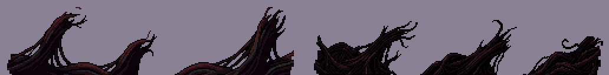
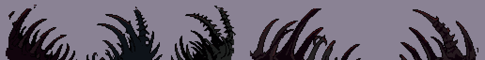
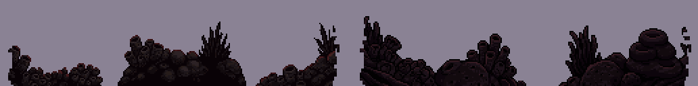
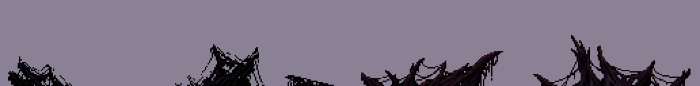
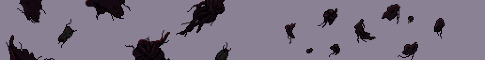

Primeiro plano próprio da F4 · conceitos em jogo
17/10/2026 · Polimento, bloco C. No bloco A saíram as silhuetas derelict, que mordiam a borda, e a fase perdeu profundidade. Aqui estão os conceitos para repor isso. Os GIFs dos conceitos (abaixo da seção instalada) são a F4 de verdade com as peças montadas só na memória, andando 1,3× mais rápido que a borda: é o paralaxe que dá a profundidade.
Instalado no jogo: código real, nada conduzido à mão
Pela sua regra: ossos e tendões em toda a borda; pólipos no duto e na câmara do golfinho; membrana em todas. As peças ficam debaixo da névoa (profundidade 60). A câmara sai da borda da placa em que a peça nasce, então a troca de família rola com o mundo, como a própria borda.
- 44 peças (as quatro famílias, em tamanho cheio e reduzidas por 2) num atlas só:
public/sprites/f4-frente.png. O código está emsrc/systems/PrimeiroPlanoF4.ts. - Nunca cruza a superfície: a peça só entra se couber no trecho de faixa por onde vai escorregar até sair da tela. A sonda nova (
scripts/probe-f4-frente.mjs) confere isso coluna a coluna, em todos os 7.500 quadros da fase: nenhum cruzamento. - Na arena (o esfíncter e o núcleo, depois de t=109) ele apaga junto com as outras peças de cenário e não nasce mais. Com elite em cena ele atenua, como o primeiro plano das outras fases. No duto ele não apaga, ao contrário do
derelictantigo: aqui ele não cobre passagem nenhuma. - Nada sorteia do dado do jogo: a linha de base dos corredores (
probe-stage4) não mudou.


O que a medição mostrou
- O espaço é pequeno. A regra é não cruzar a linha da superfície da borda, então a peça mora entre a beira da tela e essa linha. Medi a faixa a cada segundo da fase:
Trecho Espessura da faixa Abertura (t < 8s) 14–19px Câmara A e câmara azul (B) 26–34px Duto 44–82px Câmara D 28–39px - A faixa é escura justo na beira da tela e só clareia perto da superfície (a linha de lava, os arcos das costelas). Uma silhueta quase preta e baixa fica sobre a parte escura e some. Por isso a peça precisa ocupar pelo menos 55% da altura disponível.
- Nas câmaras A e B as mesas cobrem quase toda a faixa, então sobra pouco lugar para o primeiro plano aparecer.
- Os primeiros conceitos saíram altos e finos (colunas de 8 a 22px de largura depois de caber na faixa) e sumiam no jogo. Refiz os quatro como massas largas e baixas ao longo da borda. As pontas foram esfareladas, para nenhuma ter corte reto.
Os quatro conceitos de borda
Quase pretos, com só um fio de luz vermelha no topo. No teto, as mesmas peças viradas. Duas sementes de cada um.




No duto, onde a faixa é grossa
É onde o primeiro plano lê melhor: a faixa tem de 44 a 82px, e a lava clara desenha a silhueta.


Nas câmaras (tendões)


Com névoa ou sem névoa
Em profundidade 60, a névoa da Atmosfera passa por cima das peças. Em 99 elas vão para a câmera limpa, sem névoa nem grão, como a coisa mais perto da lente. A diferença é pequena: a limpa fica um pouco mais nítida e mais preta. Pela regra do tratamento obrigatório, a minha escolha é ficar em 60.

A outra leitura: soltos no meio do corredor
riscoO relatório de 14/10 deixava outra opção: o primeiro plano no meio do corredor, sem tocar a borda. São fragmentos de tecido, coágulos e casulos passando 1,6× mais rápido que o mundo, sempre a 10px das duas superfícies.


A decisão (17/10: ele escolheu usar todas as variações)
- minha apostaPrimeiro plano de borda, ossos ou tendões, onde a faixa der espaço: no duto ele aparece sempre; nas câmaras, só nos vãos entre as mesas. Os ossos recortam melhor contra a lava; os tendões combinam com a matéria da câmara A.
- alternativaOs pólipos, que leem bem no duto como cracas grudadas.
- ouNão pôr primeiro plano. Nas câmaras A e B o efeito é pequeno de qualquer jeito, e a profundidade pode vir de outro lugar.
- Os fragmentos soltos eu não recomendo, pelo risco de parecerem inimigos.
Gerações nesta rodada: ~190 (19 tiras de 10, contando a 1ª rodada de colunas altas e uma tira de 32px que voltou vazia). Nada foi commitado.